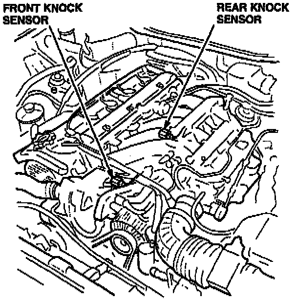

Knock Sensor Replacement - Updated procedure: Overview
September 26, 1995BULLETIN NO.
95-021
VIN APPLICATION
ALL
MODEL
VIGOR
2.5TL
YEAR
1992-94
1995-96
Service Manual Update: Knock Sensor Replacement
BACKGROUND

There is no procedure given in the service manual to replace either knock sensor. The time given in the Flat Rate Manual for replacement of the rear knock sensor allows for removal of the intake manifold, which is not necessary.
WARRANTY CLAIM INFORMATION
In warranty:
The normal warranty applies.
Out of warranty:
Any repair performed after warranty expiration may be eligible for goodwill consideration by the District Technical Manager or your Zone Office. You must request consideration, and get a decision, before starting work.
OPERATION NUMBER DESCRIPTION FLAT RATE TIME
121187 Replace front knock sensor 0.6 hour
121188 Replace rear knock sensor 0.5 hour
Failed P/N: 30530-P1R-A01
Defect code: Dependent on failure
Contention code: Dependent on failure